Dental ZX
Dental ZX è una stampante DLP a resina per il settore dentale che integra stampa, lavaggio e polimerizzazione UV in un’unica macchina.
Ricerca, design di prodotto e sviluppo del prototipo.
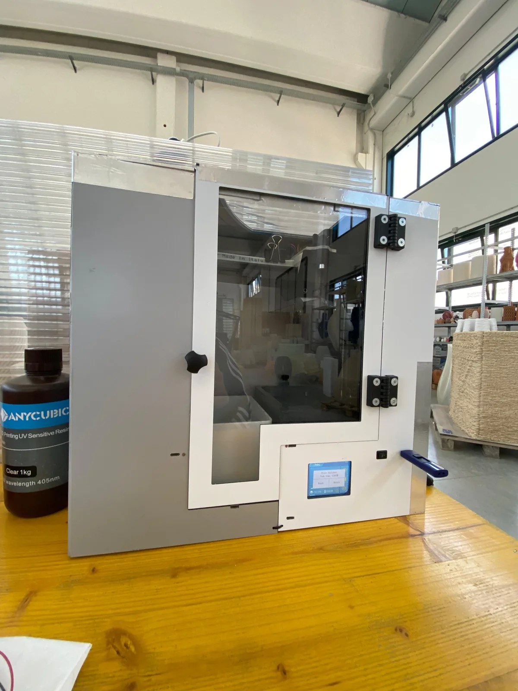
- Studio / Azienda
- WASP
- Periodo
- 2022–2023
- Ambito
- Dental / stampa DLP
- Esito
- Tesi triennale in Design del Prodotto Industriale, Bologna · 24 marzo 2023
Una macchina, tre fasi.
Unica e innovativa, Dental ZX riunisce le funzioni di tre macchine: stampa, lavaggio e polimerizzazione UV.
Dental ZX automatizza i processi di pulizia e lavaggio, asciugatura ed esposizione ai raggi UV necessari dopo la stampa, garantendo un risultato di qualità e semplificando l’esperienza dell’utente. L’integrazione delle tre funzioni offre inoltre una soluzione significativamente più economica rispetto all’insieme di macchine necessarie per svolgere le stesse operazioni.
Il progetto è nato durante il mio tirocinio presso WASP nel 2022. Dopo mesi di ricerca e sviluppo, il prototipo ha dato risultati molto positivi e ho prolungato la collaborazione con WASP per continuarne lo sviluppo. Il lavoro è diventato la mia tesi di laurea triennale in Design del Prodotto Industriale, discussa a Bologna il 24 marzo 2023.
Dalla ricerca alla tesi.
Un percorso di ricerca e sviluppo condotto insieme a WASP, dal sistema integrato alle verifiche sul prototipo.
Integrare stampa e post-processo
La ricerca ha esplorato l’integrazione di stampa DLP, lavaggio, asciugatura e polimerizzazione UV in un solo sistema per il settore dentale.
Sviluppare il prototipo
Disegni CAD, prove di ingombro, sviluppo meccanico, elettronica e realizzazione della scocca hanno portato alla macchina assemblata.
Testare e continuare lo sviluppo
I risultati positivi del prototipo hanno portato a prolungare la collaborazione con WASP e a trasformare il progetto nella tesi di laurea triennale.
Vista del progetto
DA AGGIUNGEREDal disegno al prototipo.
Disegni CAD, prove di ingombro, sviluppo meccanico e prototipo finale.
Seleziona un’immagine per ingrandirla.
{kind=link}
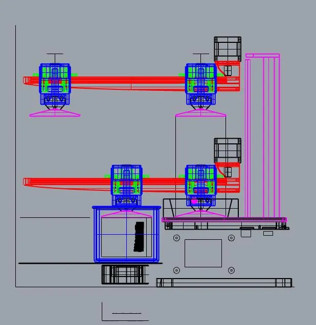
{kind=link}
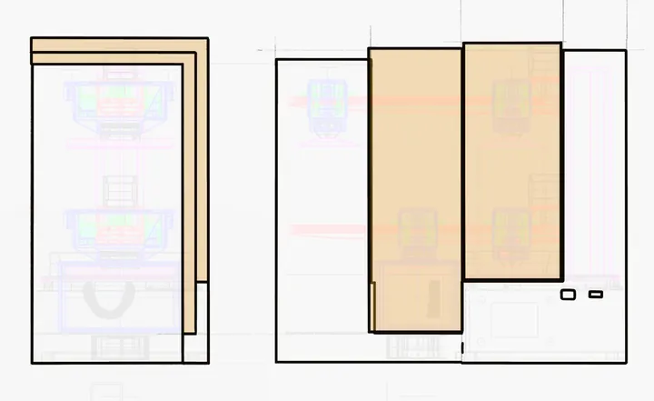
{kind=link}
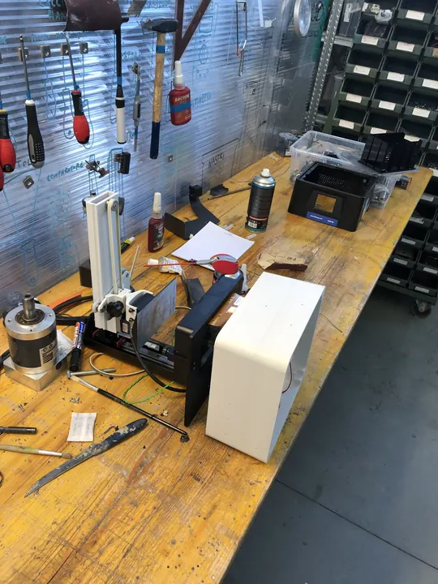
{kind=link}
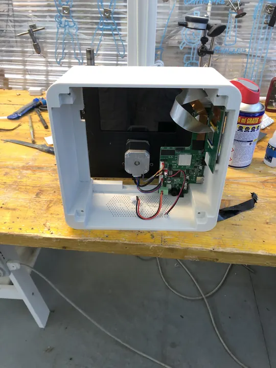
{kind=link}
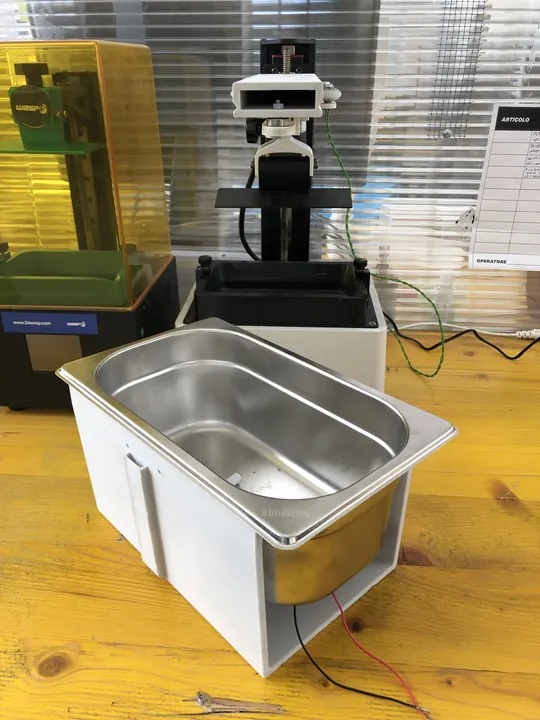
{kind=link}
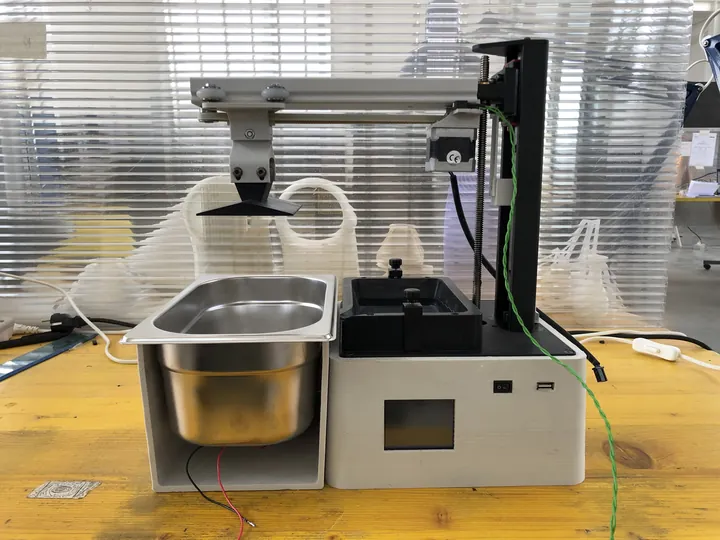
{kind=link}
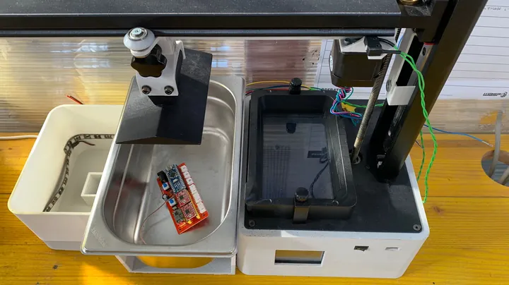
{kind=link}
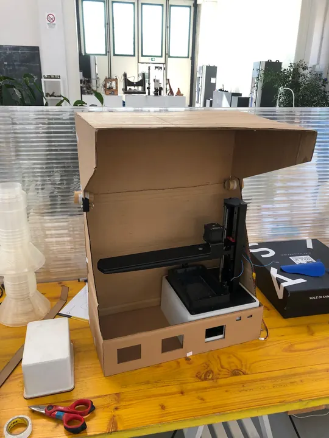
{kind=link}
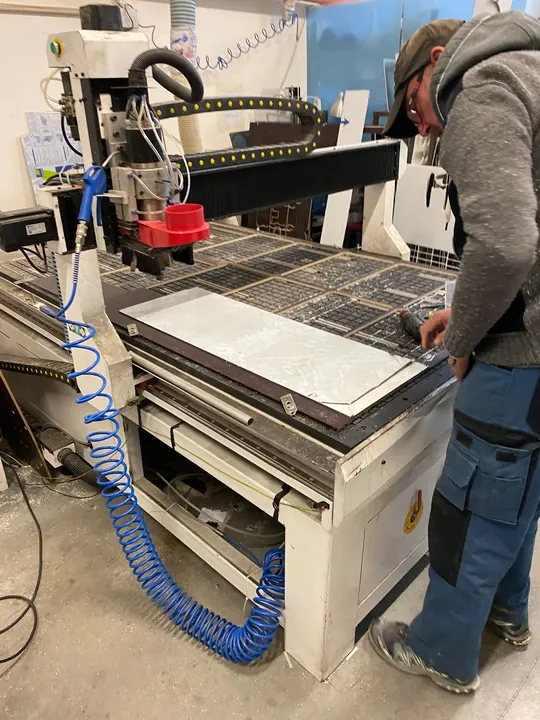
{kind=link}
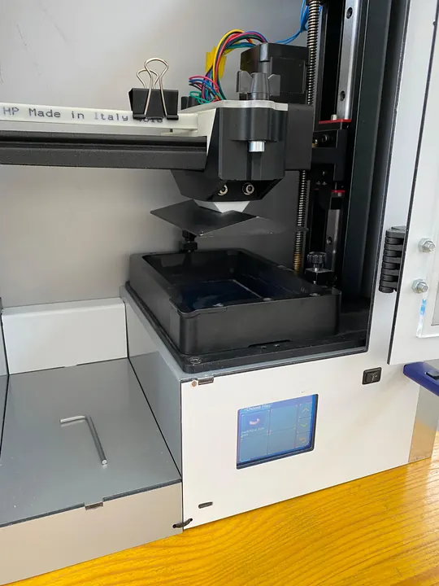
{kind=link}
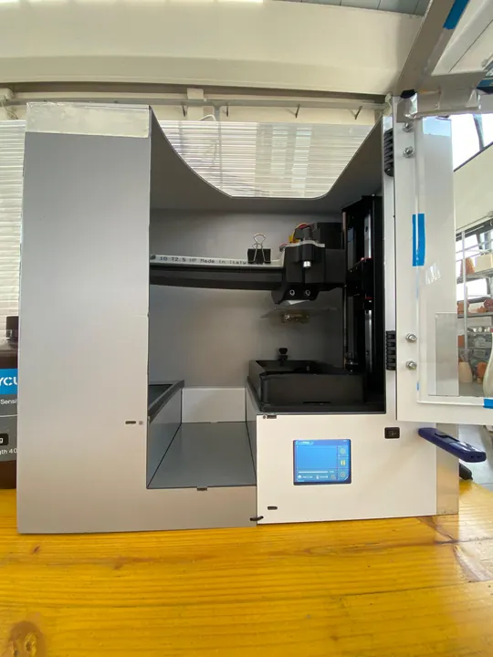
{kind=link}
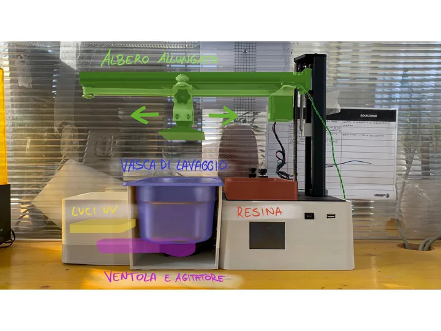
Hai un’idea da sviluppare?
Ogni progetto inizia da una conversazione.